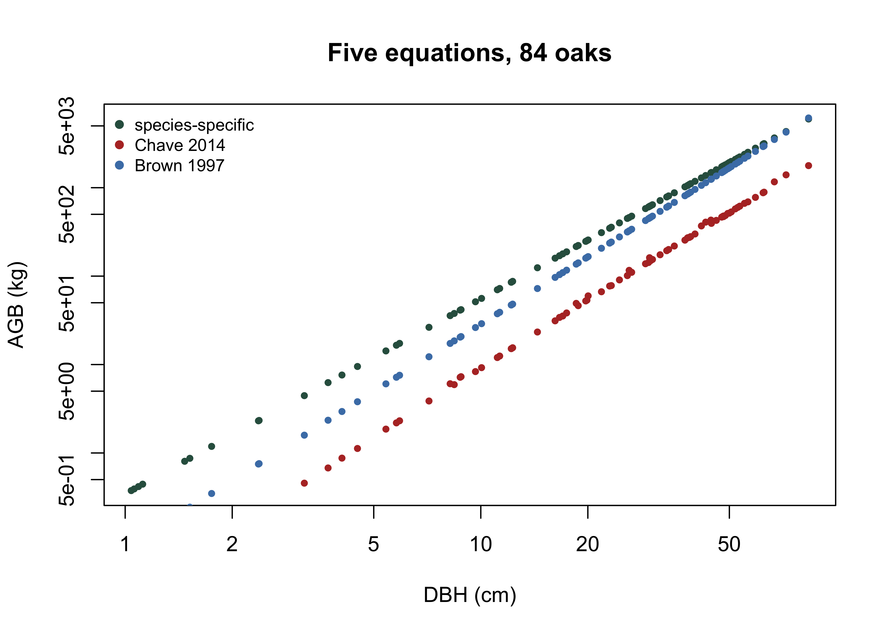

7 Allometry and Biomass
7.1 You cannot weigh a forest
Every carbon number in this book rests on a step that is easy to miss. Nobody weighs a standing tree. Field crews measure diameter, sometimes height, and a statistical model converts those measurements into biomass. That model is an allometric equation, and it was fitted somewhere else, on other trees, by someone who cut them down and weighed them.
This is the largest single source of error in most forest carbon estimates, and it is the one least visible in a project report, because the equation appears as a line of code rather than a measurement with an error bar. A verifier who checks the field data and the arithmetic but never asks where the equation came from has checked the easy part.
The chapter is about that choice: what an allometric equation is, how to select one, what it costs to select badly, and how to carry the resulting uncertainty forward.
7.2 The form of the equation
Tree biomass scales with diameter as a power law. A tree twice as wide is far more than twice as heavy, because mass grows roughly with the square of diameter for cross-sectional area and again with height. The canonical form is
\[AGB = a \, D^{\,b}\]
with \(D\) the diameter at breast height and \(b\) typically between 2.3 and 2.6. Taking logarithms makes it linear and, more importantly, stabilises the variance, because absolute scatter grows with tree size while proportional scatter stays roughly constant:
\[\ln(AGB) = \ln(a) + b\,\ln(D) + \varepsilon\]
Fitting on that scale is standard practice, but it introduces a trap. Exponentiating a prediction from log space returns the median rather than the mean of the distribution, which systematically underestimates biomass. The correction is a multiplicative factor \(\exp(\hat{\sigma}^2/2)\) (Baskerville, 1972), and it is used throughout this book. Chapter 11 shows what it does to the error statistics.
7.3 Choosing an equation
There are thousands of published equations. Choosing among them is the analyst’s judgement, and the metadata that governs the choice is more informative than the coefficients. The eq_tab_acer table holds published equations for maples, with the fields a careful selection actually needs:
knitr::kable(head(eq[, c("equation_taxa", "equation_allometry",
"dbh_min_cm", "dbh_max_cm", "sample_size")], 5))| equation_taxa | equation_allometry | dbh_min_cm | dbh_max_cm | sample_size |
|---|---|---|---|---|
| Acer saccharum | exp(-2.192-0.011dbh+2.67(log(dbh))) | 2.80 | 69.50 | 18 |
| Acer rubrum | 2.02338*(dbh2)1.27612 | 12.95 | 27.18 | 18 |
| Acer rubrum | 5.2879*(dbh2)1.07581 | 30.48 | 42.67 | 12 |
| Acer pseudoplatanus | exp(-5.644074+(2.5189(log(pidbh)))) | 11.50 | 96.50 | 10 |
| Acer mandshuricum | 0.0335*(dbh)1.606+0.0026(dbh)^3.323+0.1222(dbh)2.310 | 7.80 | 35.90 | 10 |
Four questions decide it. Does the equation match the taxon, at species or at least genus level? Was it fitted in a comparable environment, since the same species allocates biomass differently in a dense stand than an open one? How many trees was it fitted on? And, most neglected, over what diameter range?
summary(eq$sample_size)
#> Min. 1st Qu. Median Mean 3rd Qu. Max. NA's
#> 9.00 10.25 13.00 25.95 35.50 150.00 2The median equation here was fitted on thirteen trees. That is not unusual and not a scandal, because destructive harvest is expensive and slow, but it should calibrate how much confidence a single published equation deserves.
7.4 The cost of the choice
The abstract argument becomes concrete when you apply several defensible equations to the same trees. The scbi_quercus file holds 84 oak stems with aboveground biomass computed five ways: a species-specific equation, a genus-level one, the pantropical models of Chave et al. (2014) and its 2005 predecessor, and an older generic equation.
q <- read.csv2("data/scbi_quercus.csv")
for (v in grep("^agb", names(q), value = TRUE)) q[[v]] <- as.numeric(q[[v]])
totals <- colSums(q[, grep("^agb", names(q))]) / 1000 # tonnes
round(totals, 2)
#> agb_species agb_genus agb_chave2014 agb_chave2005 agb_brown1997
#> 75.15 81.25 20.50 97.38 65.23
round(c(ratio = max(totals) / min(totals),
spread_pct = 100 * (max(totals) - min(totals)) / min(totals)), 2)
#> ratio spread_pct
#> 4.75 374.96The same 84 trees, measured once, weigh between 20 and 97 tonnes depending on which published equation you apply. The largest estimate is 4.75 times the smallest. No field error, no measurement problem, no disagreement about the data: the entire spread is equation choice.
carbon_ha <- totals * 0.47 / 25.6
round(carbon_ha, 2)
#> agb_species agb_genus agb_chave2014 agb_chave2005 agb_brown1997
#> 1.38 1.49 0.38 1.79 1.20Expressed as carbon density, the choice moves the answer from 0.38 to 1.79 MgC per hectare. If that were a crediting claim, four fifths of it would be a modelling decision.
Not all five are equally defensible, and that is the point rather than an objection. The pantropical equations were fitted on tropical moist forest and applied here to a temperate oak stand, which is precisely the kind of extension that looks harmless in code and is indefensible in review. Knowing that requires reading the equation’s provenance, not its coefficients.
plot(q$dbh, q$agb_species, log = "xy", pch = 19, cex = 0.6, col = "#2f5d4e",
xlab = "DBH (cm)", ylab = "AGB (kg)", main = "Five equations, 84 oaks")
points(q$dbh, q$agb_chave2014, pch = 19, cex = 0.6, col = "#b5342e")
points(q$dbh, q$agb_brown1997, pch = 19, cex = 0.6, col = "#4a7fb5")
legend("topleft", c("species-specific", "Chave 2014", "Brown 1997"),
col = c("#2f5d4e", "#b5342e", "#4a7fb5"), pch = 19, bty = "n", cex = 0.8)
On log axes the equations are near-parallel lines separated by a constant factor. The divergence is not a subtle disagreement about form; it is a straightforward difference in level that persists across every tree in the stand and therefore does not average out.
7.5 Extrapolation, and where the carbon is
An equation is only evidence over the diameters it was fitted on. Outside that range it is an extrapolated power law, and power laws extrapolate badly. Check the maple equations against the maples actually in the plot:
stems <- read.csv("data/scbi_stem1.csv")
acer <- stems[stems$genus == "Acer" & !is.na(stems$dbh), ]
c(stems = nrow(acer), min_dbh = min(acer$dbh), max_dbh = max(acer$dbh))
#> stems min_dbh max_dbh
#> 32.00 1.04 60.71
has_range <- !is.na(eq$dbh_min_cm) & !is.na(eq$dbh_max_cm)
in_range <- sapply(which(has_range), function(i)
100 * mean(acer$dbh >= eq$dbh_min_cm[i] & acer$dbh <= eq$dbh_max_cm[i]))
round(summary(in_range), 1)
#> Min. 1st Qu. Median Mean 3rd Qu. Max.
#> 12.5 34.4 40.6 43.3 45.3 100.0The median published equation is calibrated over a range that contains only about 40 per cent of the stems it would be applied to. That is bad, and the next calculation shows it is much worse than it looks, because stems are not what matters. Weight each stem by its approximate biomass and ask what share of the carbon sits inside the calibration range:
w <- exp(-2.48 + 2.4835 * log(acer$dbh)) # approximate stem biomass
in_range_c <- sapply(which(has_range), function(i) {
ins <- acer$dbh >= eq$dbh_min_cm[i] & acer$dbh <= eq$dbh_max_cm[i]
100 * sum(w[ins]) / sum(w)
})
round(summary(in_range_c), 1)
#> Min. 1st Qu. Median Mean 3rd Qu. Max.
#> 0.0 2.7 13.3 29.0 48.8 100.0The median falls from 40 per cent of stems to 13 per cent of biomass, and several equations cover essentially none of it. The reason is structural rather than accidental. Destructive sampling is dominated by small trees because large ones are expensive to fell and rare in the sample, so equations are best supported exactly where the carbon is not. Almost every biomass estimate ever made is an extrapolation over the trees that carry most of its mass.
Three equations out of twenty-three remain valid at the largest maple in the plot. A project that reports a single point estimate from a single equation is concealing that.
7.6 Wood density and generic equations
When no local equation exists, the usual recourse is a generic model with wood density as a covariate, on the reasoning that density carries much of the between-species variation in mass per unit volume. The scbi_quercus file includes the density used:
q$WD <- as.numeric(q$WD)
knitr::kable(unique(q[, c("species", "WD")]), row.names = FALSE)| species | WD |
|---|---|
| alba | 0.6300 |
| michauxii | 0.6515 |
| prinus | 0.5700 |
| rubra | 0.5600 |
| velutina | 0.5600 |
Five oak species carry four distinct density values, spanning 0.56 to 0.65, a range of about sixteen per cent. Since biomass is roughly proportional to density in these models, getting the species wrong costs less than getting the equation wrong, which is the argument for generic models: they trade one kind of error for another, being applicable far more widely and less accurate anywhere in particular. Note too that the densities are themselves look-ups from a reference database rather than measurements from these trees, so the covariate that is supposed to absorb between-species variation carries its own error.
7.7 From stem to stand
Scaling is arithmetic, and the arithmetic is where units go wrong. Biomass per stem sums to biomass per plot, divides by plot area for density, and multiplies by the carbon fraction to become carbon:
The carbon fraction of 0.47 is itself a default with its own uncertainty, and it multiplies everything above it. Chapter 11 propagates that.
What the registries ask of an equation
Standards do not usually mandate a particular equation. They constrain how you justify one and what you must report about it, which is a more demanding requirement than it first appears.
Expect to have to document, for each equation used: the source publication, the taxa and geography it was fitted on, its sample size, its diameter range, and an argument that the project’s trees fall inside that range. Where they do not, the extrapolation must be acknowledged and its effect on uncertainty carried through.
The uncertainty attached to the equation then enters the deduction arithmetic set out at the end of Chapter 11. Under ART-TREES the allometric contribution feeds the half-width of the 90 per cent interval; under ACR’s Improved Forest Management methodology it is one component of the total uncertainty combined in Equation 22 and compared against the ten per cent precision requirement. In both cases the practical consequence is the same, and it is the argument this chapter has been making with numbers: a better-matched equation is worth more than a larger field campaign, because it reduces a term that no amount of extra plot measurement will touch.
7.8 Exercises
- Using
eq_tab_acer, list the equations fitted on more than 30 trees. How many are there, and does the larger sample come at the cost of a narrower diameter range? - Apply the species-specific and genus-level columns of
scbi_quercusto compute total stand carbon each way. Express the difference as a percentage, and state which you would defend to a verifier and why. - Recompute the biomass-weighted coverage above using a weight of \(D^2\) instead of the allometric weight. Does the conclusion about where the carbon sits change, and what does that tell you about how sensitive the argument is to the weighting?
- Take the largest maple in the plot and compute its biomass under the three equations that remain valid at that diameter and under three that do not. How large is the spread, and how does it compare with the spread across the whole stand?
- (Applied.) A project has no species-specific equation for its dominant species. Write the paragraph you would put in a monitoring report justifying a generic equation, naming the specific uncertainty it introduces and how you would quantify it.